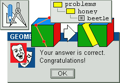

Stelian Dumitrascu
|
A graphic interface for creating and solving problems in solid geometry. Packed with 30 sample problems and solutions. Free to use and distribute.
 |
| For unaccompanied violin. |
| Solo day trips. |
| Day trips. |
| Eight sketches on how it feels to be a minority in your own country. |
| Art and poetry by Romanian artist Suzana Fantanariu. |
| is a Russian poet. Check out his translations of Jared Leto's lyrics. |
| has put together a fantastic collection of traditional Romanian songs. |